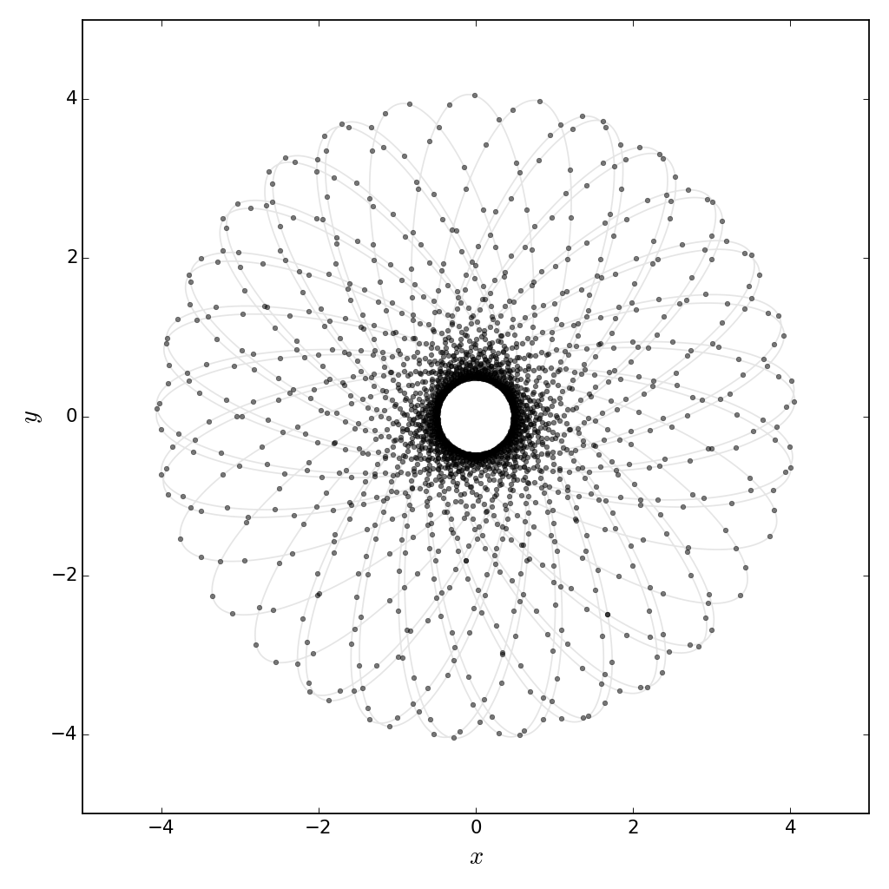
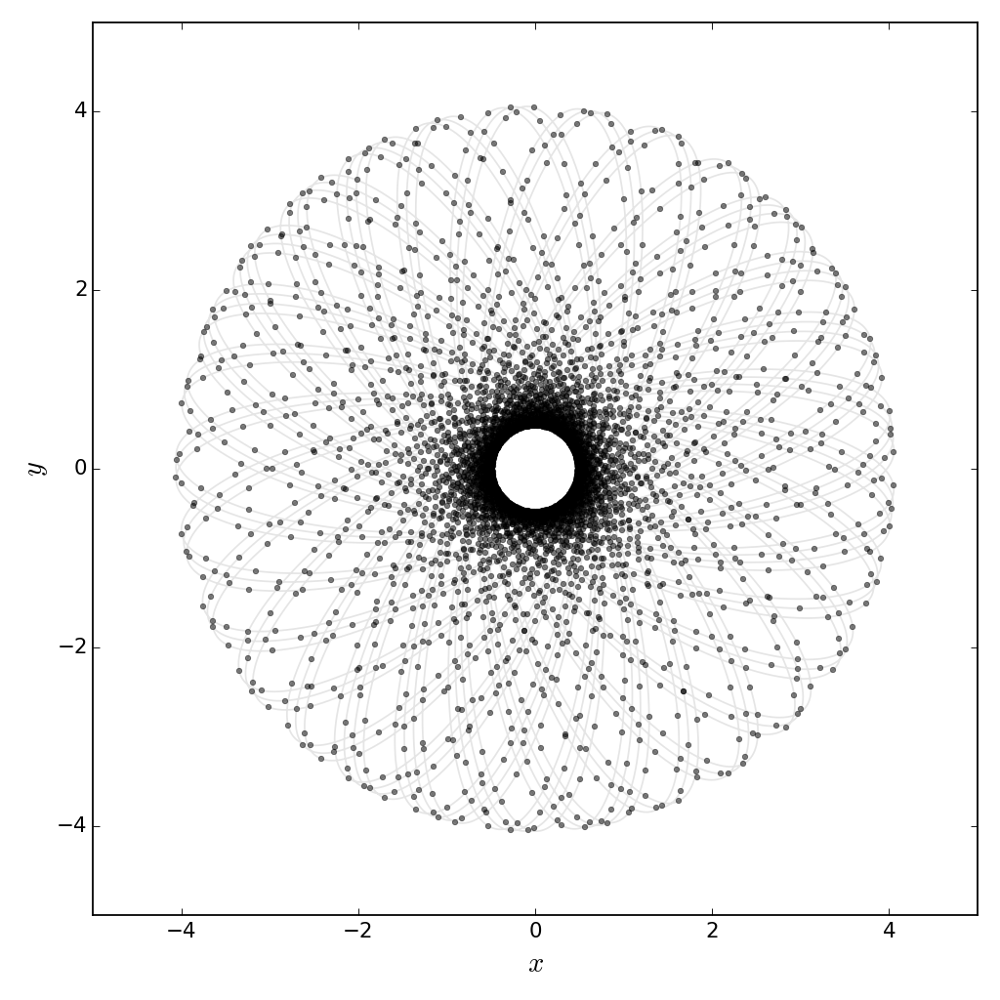
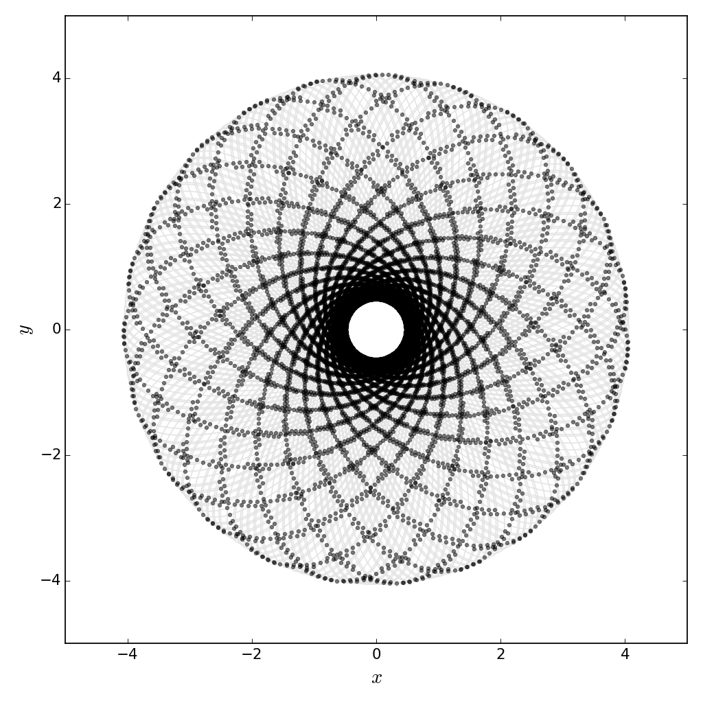
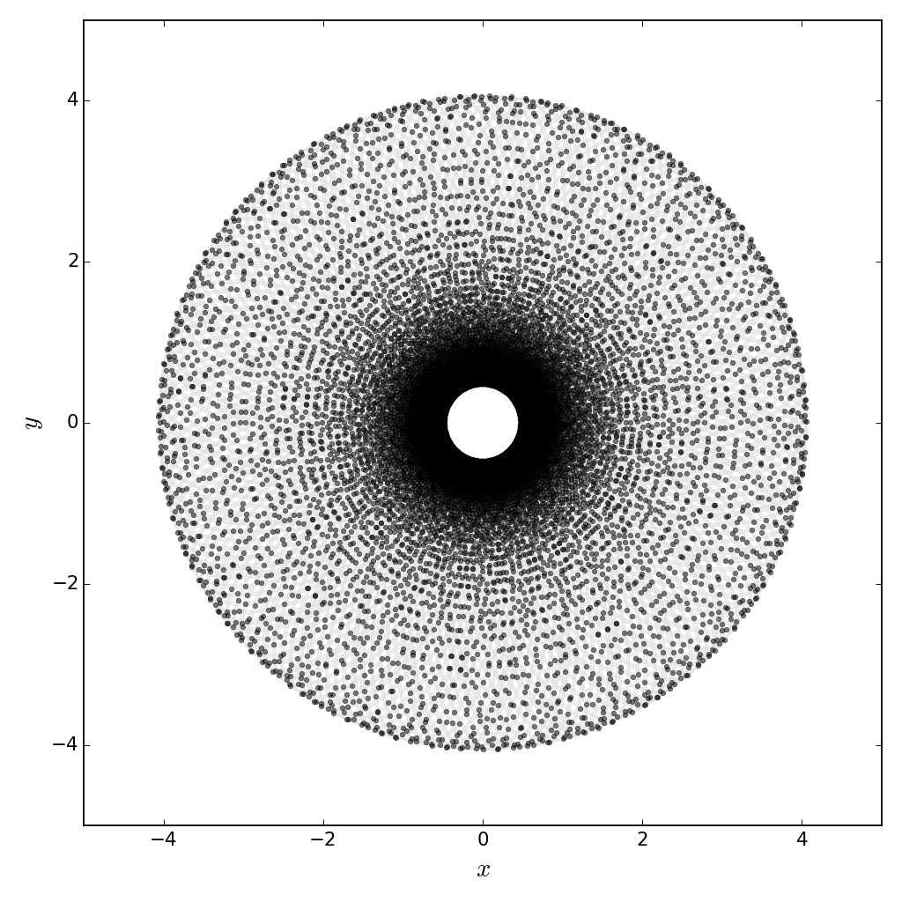
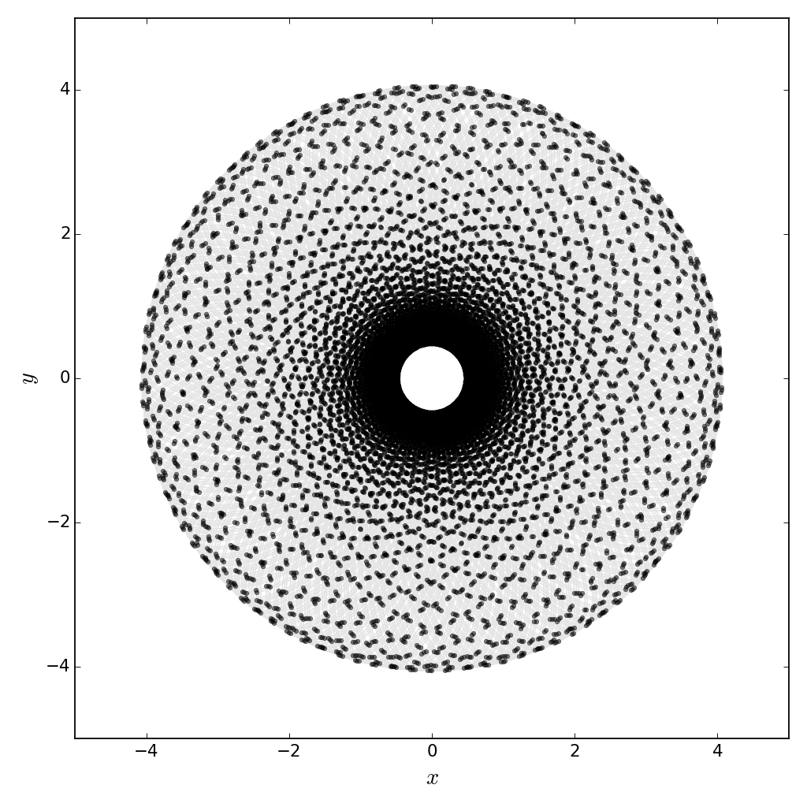
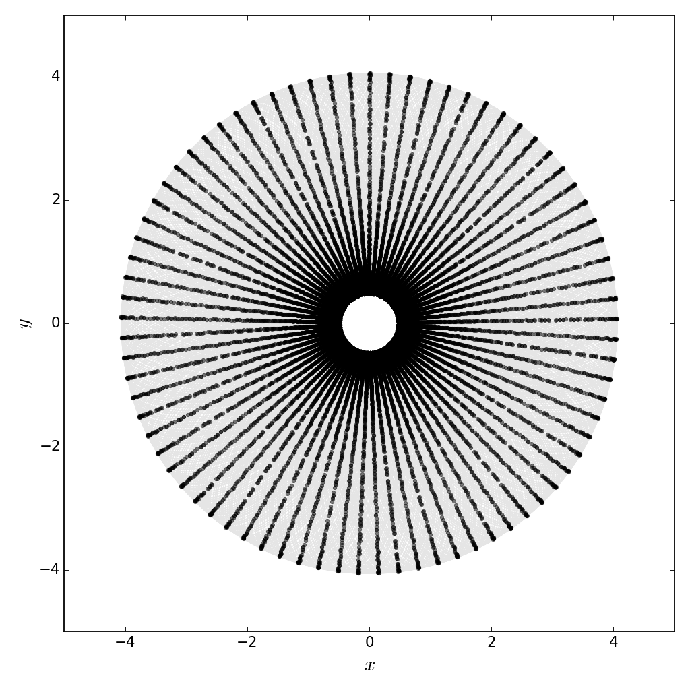
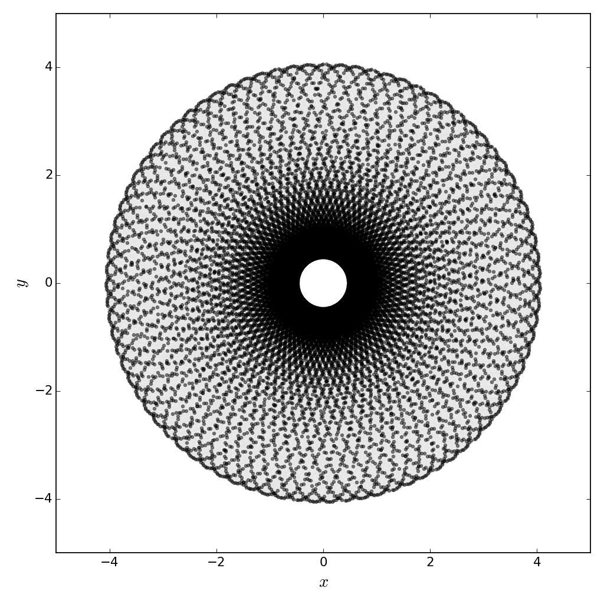
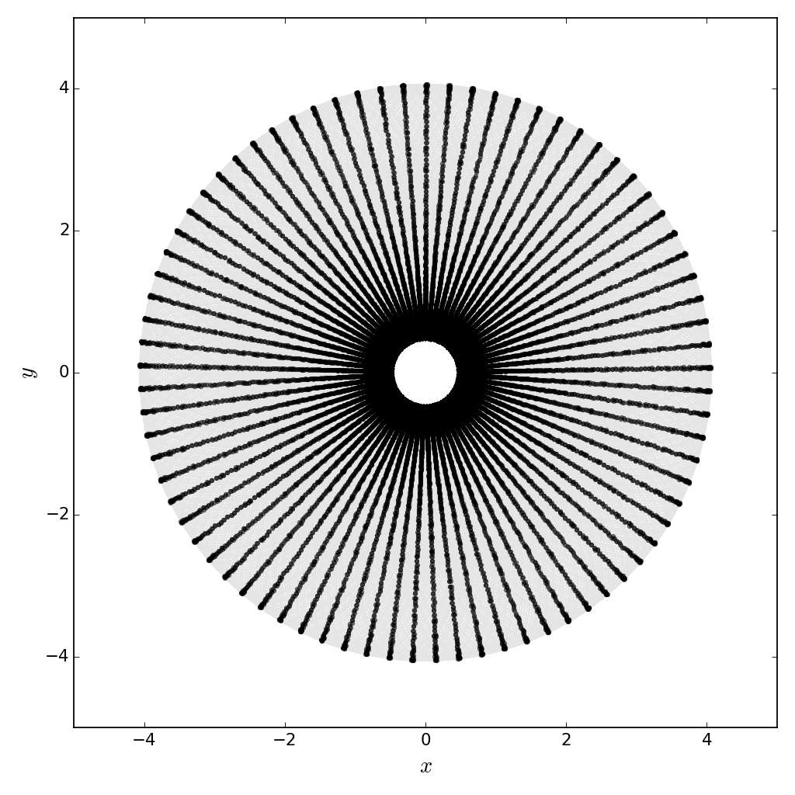
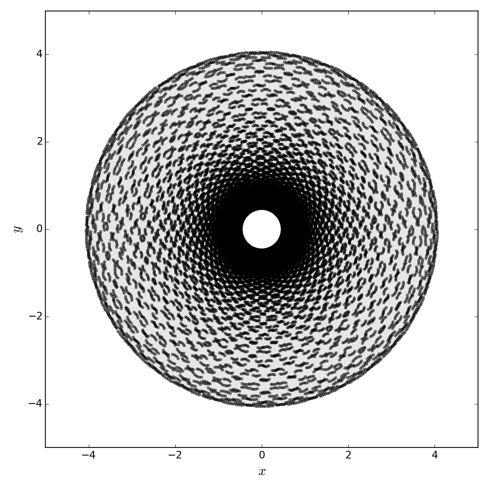
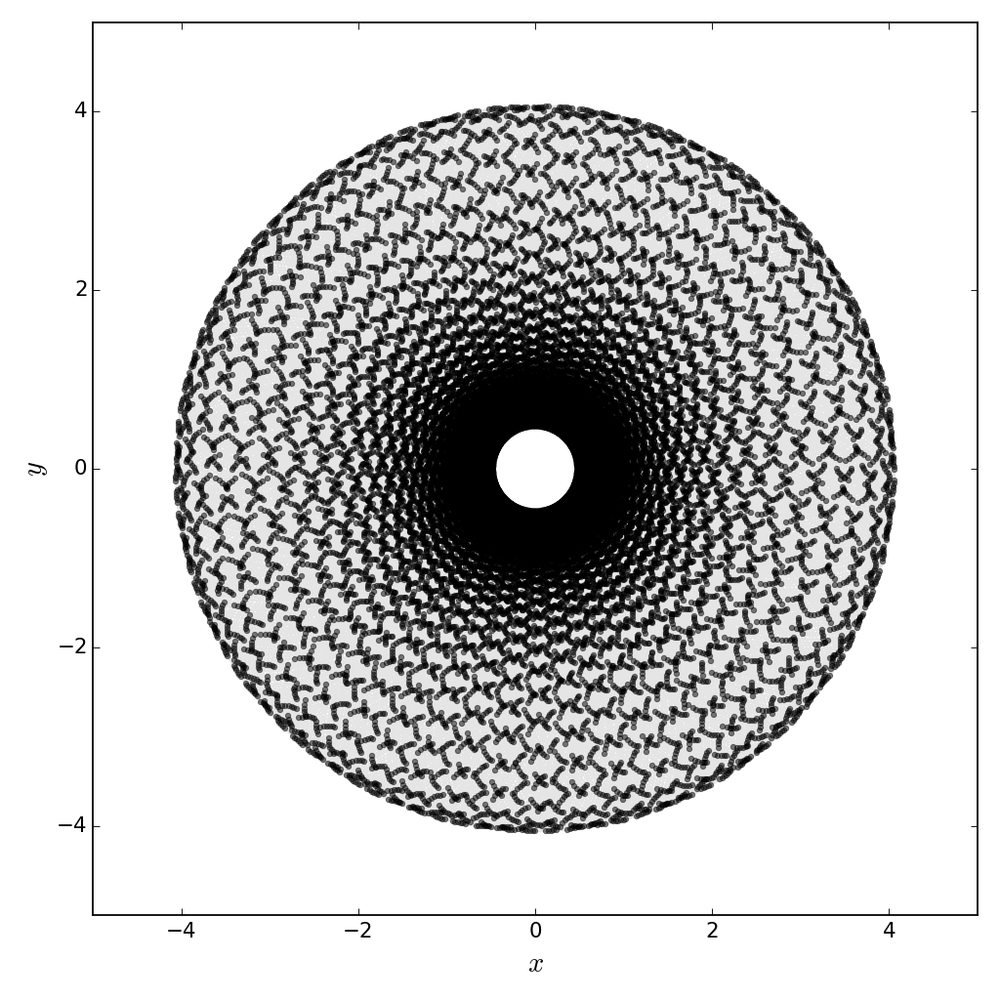

Orbits in a logarithmic potential, and an update!
Pictures of galaxies show you 10% of what's there (by mass).
A pretty surprising observational result in astronomy is the radial velocity distribution of galaxies. First things first: for our purposes, there are two major classes of galaxies, (1) spiral (like our own Milky Way), and (2) ellipticals (which unsurprisingly are roughly ellipsoids in space). There are complications but let's not talk about them.
Anyway, so you look at a spiral galaxy in a fancy telescope, and your first gut reaction (after maybe, "wow") is probably something like: "it's SPINNING!".
Is it really? Yes. But not how you might expect. If you just look at the galaxy, you might think that most of its mass is where it's brightest - the center. Following this logic, if we wanted to guess the velocity of something far from the center (like say, our sun from the center of the Milky Way), we would write down a Newtonian circular motion equation like
for \(v\) the velocity of our 'point particle' and \(r\) its distance from the center of the galaxy. The symbol \(\propto\) means "proportional to", and Eq. \(\ref{eq:kepler}\) is essentially a statement that the (centripetal) acceleration of our 'test particle' (the star) is proportional to a force that falls off as the inverse square of the particle's distance from the galaxy's center - just Newtonian mechanics!
Rearranging, this means that we would expect the velocity of stars in galaxies to fall off as \(r^{-1/2}\).
This is not what's observed. It turns out, the behavior near the center is about what we expect for there being a lot of mass there, but as we go further out, the velocity of stars with respect to the galactic center barely decreases!
What's going on? Our only assumption was about the mass distribution of the galaxy. So that must be wrong. There must be some unseen mass, not in the form of stars. Fixing a hypothetical mass distribution to match the dynamics of the galaxies (stars have constant velocity out to the edge of where we see them), we find that the mass must be proportional to the radial distance from the galaxy center. In other words, going outward, the MASS is going up, but the light we see from stars is disappearing. It turns out that some of this mass is in the form of gas (mostly hydrogen) that just doesn't shine very brightly, but a lot of it is still unaccounted for.
This is an unsolved problem. The deficit is called 'dark matter'.
Orbits and the Logarithmic Potential
Okay, so past some characteristic length both spiral and elliptical galaxies have constant rotation velocity. What path do stars take as these spin around in them?
As part of an assignment for a class recently, I looked at the path a single star travels, over billions of years, in a galaxy. Some of these figures looked pretty cool, so I figured I would share them! I set up the markers to tick about 50 times per radial orbit. The images shown are for 50, 100, 200, 300, ..., 1000 orbits.










To-do for building the website:
- Add comments!
- Actually write an update post on grad-school and research related topics.
- Write a blog post about Charles Adler's cool OoM book.